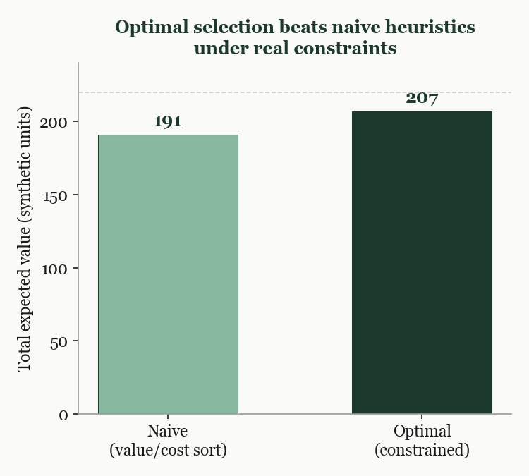

Once attention has been focused and the right questions identified, organisations face a different problem: not what matters, but what to do about it. In theory, many options look attractive. In practice, constraints force trade-offs.
A bookmaker's homepage has a fixed number of featured slots, say twelve positions where the most prominent events are displayed to customers. Each week there are hundreds of events competing for those positions. Each event has a cost, the editorial time to set it up and the ongoing pricing attention required during the event, and an expected return, the additional turnover generated by the prominent placement.
If the options were completely independent and there were no interactions between them, the right answer would be straightforward: rank everything by return divided by cost and pick from the top until the slots fill up. But real options are not independent. Two football matches from the same league on the same evening compete for the same audience. Featuring both costs more and returns less than featuring either one alone. A tennis match and a cricket test rarely compete for the same viewer, so featuring both is additive. These interactions are what make the problem hard.
The naive approach is to sort all candidate events by their return-to-cost ratio and select from the top of the list until the budget is exhausted. This looks sensible and is easy to explain in a meeting. It also fails in the presence of constraints.
The algorithm is blind to interactions. It cannot see that the second football match on the list will cannibalise the first, or that a completely different combination, slightly lower on the sorted list, would perform much better because the events complement each other rather than competing. Greedy selection optimises items individually. The real problem requires optimising combinations. These are not the same thing, and the difference in outcome can be substantial when the constraints are binding.
A proper optimisation approach does something fundamentally different. Instead of evaluating items one at a time, it evaluates combinations. Thousands of candidate sets are tested against the capacity and interaction constraints simultaneously to find the combination that maximises total expected return while respecting every constraint.
The output is not a recommendation. It is a baseline: here is what is achievable given your current assumptions. That baseline is useful in three ways. First, it shows the true cost of each constraint. Remove one constraint and re-run the solver. The gap between the two results tells you exactly what that constraint is costing you. Second, it reveals trade-offs that were previously invisible. Taking slightly less from one event may free capacity to include two others, producing a net gain that no amount of intuition would have surfaced. Third, it gives stakeholders a concrete answer to "are we leaving money on the table?" The answer is always yes. The question is how much, and now you can quantify it.

Not every decision requires a combinatorial solver. For some problems, a simple rule applied consistently is better than a complex model applied unevenly.
Consider tennis event featuring. Each week, dozens of tennis matches are scheduled. Some involve globally recognised players. Most do not. The question is simple: should a given match be highlighted on the homepage, listed at standard visibility, or deprioritised to reduce noise?
The relevant signal is what we called "star power": the share of all historical bets on the platform that involved at least one of the players in the match. This single number captures name recognition, expected engagement, and customer interest without requiring rankings data, seedings, or tournament classifications. A threshold rule does the rest. Above the threshold, feature the match. Below a lower threshold, deprioritise it. Everything in between follows the default path.
This is a conscious design choice, not a limitation. The signal is interpretable. Every stakeholder understands what star power means and can verify it. The rule is consistent. The same logic applies to every match with no special cases or manual overrides. And when someone disagrees with a specific decision, the conversation becomes concrete: is star power the wrong signal for this event, should the threshold move for Grand Slams, or is this match strategically important for a reason the data cannot capture? Those are productive questions. "The algorithm seems wrong" is not.
This is the third and final article in the series, and it is worth stepping back to see how the pieces connect. The first article, on pricing and calibration, established that odds are prices and that calibration is the honest measure of whether those prices are right at scale. When the calibration curve bends, something is broken. When it holds, the system is healthy.
The second article, on automated triage, showed how to direct limited analytical attention toward the areas of greatest impact. Compress the data to remove noise, rank by deviation to impose an objective priority, and use a language model to convert the ranked list into a readable starting point for human investigation. The model tells you where to look. It does not tell you what to think.
This article showed two complementary approaches to decisions under constraint. When the options interact and the stakes justify the complexity, optimisation evaluates combinations rather than individuals and reveals trade-offs that intuition alone would miss. When the signal is clean and the rule needs to be explainable to a stakeholder on a Monday morning, a simple threshold classification is the right answer.
The thread connecting all three is the same principle: good analytical systems are appropriately complex where complexity is earned and deliberately simple everywhere else. Complexity that cannot be explained is not an asset. It is a liability in disguise.
This is part three of a three-part series on working analytically in the gambling industry.
Previous: Automated Triage — how to direct human attention to the highest-impact market movements using a compress-rank-summarize pipeline.
Start from the beginning: Pricing & Calibration — how bookmaker odds work as prices and what calibration reveals about systematic errors.